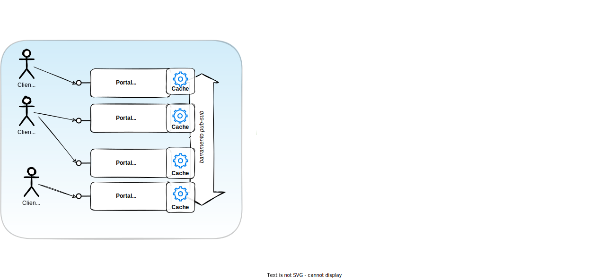
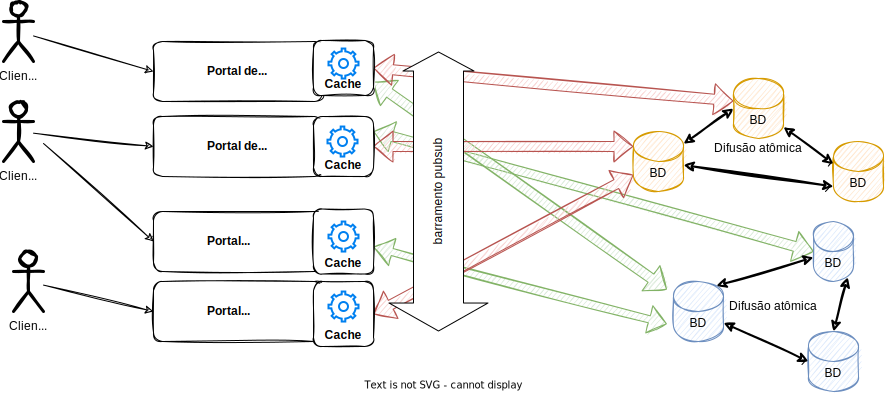

Projeto 2024 1
A área de computação distribuída é rica em aplicações e desenvolvê-los é topar de frente com vários problemas e decidir como resolvê-los ou contorná-los e, por isto, nada melhor que um projeto para experimentar em primeira mão as angústias e prazeres da área. Assim, proponho visitarmos o material destas notas à luz de uma aplicação genérica mas real, desenvolvida por vocês enquanto vemos a teoria.
O projeto consiste em implementar um Sistema de Bibliotecas com armazenamento chave-valor (key-value store = KVS).
A arquitetura do sistema será híbrida, contendo um pouco de cliente/servidor, publish/subscribe e Peer-2-Peer, além de ser multicamadas. Apesar de introduzir complexidade extra, também usaremos múltiplos mecanismos para a comunicação entre as partes, para que possam experimentar com diversas abordagens.
O sistema contempla dois portais: Portal Cadastro e Portal Biblioteca. O Portal Cadastro é responsável por manter os cadastros de usuários e livros. O Portal Biblioteca gerencia o empréstimo de livros a usuários.
O sistema utiliza a arquitetura cliente-servidor na comunicação com os clientes dos portais, que invoca as operações definidas mais adiante, e servidores, que atualizam o estado de acordo e retornam o resultado a cada cliente.
Múltiplas instâncias do servidor de cada portal podem ser executados simultaneamente para aumentar a disponibilidade do serviço e/ou atender um maior número de clientes (escalar). O detalhamento do comportamento e implementação, neste caso, será diferente para cada etapa do projeto, sendo detalhado nas seções seguintes.
Tanto as aplicações clientes quanto os servidores devem, obrigatoriamente, possuir uma interface de linha de comando (command line interface - CLI) para execução e interação. O cliente deve ter uma interface interativa, ou seja, deve permitir a escolha da operação a partir de menu impresso no terminal, fazendo a leitura dos campos necessários a partir do teclado.
A aplicação servidor manipula cada chave K em operações de escrita e leitura de acordo com a descrição e interface apresentadas mais adiante. A tupla (K,V) significa que a chave K possui valor V. Cada atualização para a mesma chave K com um novo valor V' substitui o valor V armazenado previamente. As chaves e valores devem ser do tipo String.
Os dados de usuários e livros em cada Portal são mantidos em um tabela hash ID -> Dados, todos do tipo String e armazenados em memória (use uma tabela hash).
O campo Dados deve ser armazenado como uma string JSON, com formato definido por você, devidamente descrito na documentação do projeto.
Além disso, você pode criar tabelas hash adicionais para representar a relação entre os dados.
Por exemplo, pode-se criar a tabela UsuarioLivro no Portal Biblioteca com chave correspondente ao ID do usuário e com valor igual à lista de livros que o usuário emprestou.
A comunicação entre clientes e servidores deve ser, obrigatoriamente, realizada via gRPC de acordo com a interface definida adiante.
O servidor do Portal Biblioteca deve obter os dados de usuários e livros a partir do servidor do Portal Cadastro. Recomenda-se manter um "cache" dos dados no servidor do Portal de Matrículas para evitar chamadas repetidas para valores já conhecidos.
A comunicação entre estes servidores será detalhada na descrição da etapa correspondente nas seções a seguir.
A implementação que não seguir o formato dos dados, a interface ou a estratégia de comunicação definidos não será avaliada e terá atribuída a nota zero.
Casos de Uso
Interface
O formato exato em que os dados serão armazenados pode variar na sua implementação, mas a API apresentada deve, obrigatoriamente, ter a assinatura definida a seguir para cada aplicação:
Portal Administrativo
1 2 3 4 5 6 7 8 9 10 11 12 13 14 15 16 17 18 19 20 21 22 23 24 25 26 27 28 29 30 31 32 33 34 35 36 37 38 39 40 41 42 43 44 45 46 47 | |
Descrição dos métodos
rpc NovoUsuario(Usuario) returns (Status) {}- Cliente:
- informa dados do usuário a ser cadastrado.
- Servidor:
- cadastra o novo usuário e retorna 0 se ele não existia previamente e os campos possuem tamanho maior do que 3.
- retorna 1 com a descrição do erro, caso contrário.
- Cliente:
rpc EditaUsuario(Usuario) returns (Status) {}- Cliente:
- informa dados do usuário a ser atualizado.
- Servidor:
- atualiza o usuário e retorna 0 se chave já existia previamente e o novos campos possuem tamanho maior do que 3.
- retorna 1 com a descrição do erro, caso contrário.
- Cliente:
rpc RemoveUsuario(Identificador) returns (Status) {}- Cliente:
- informa chave do usuário a ser removido.
- Servidor:
- remove o usuário e retorna 0 se ele já existia previamente.
- retorna 1 com a descrição do erro, caso contrário.
- Cliente:
rpc ObtemUsuario(Identificador) returns (Usuario) {}- Cliente:
- informa chave do usuário.
- Servidor:
- retorna dados do usuário solicitado, caso ele exista.
- retorna
Usuariocom dados em branco, caso contrário.
- Cliente:
rpc ObtemTodosUsuarios(Vazia) returns (stream Usuario) {}- Cliente:
- invoca método sem argumentos*
- Servidor:
- retorna lista de todos os usuários cadastrados.
- Cliente:
* A linguagem de descrição de interface do ProtoBuf exige que o método tenha argumento, sendo definida uma mensagem sem atributos denominada Vazia para garantir conformidade.
A mesma lógica do cadastro de usuários se aplica ao cadastro de livros.
Portal Biblioteca
1 2 3 4 5 6 7 8 9 10 11 12 13 14 15 16 17 18 19 20 21 22 23 24 25 26 27 28 29 30 31 32 33 34 35 36 37 38 39 40 41 42 43 44 45 46 47 48 49 50 51 52 53 54 55 56 57 58 59 60 61 62 63 64 | |
Descrição dos métodos
rpc RealizaEmprestimo(stream UsuarioLivro) returns (Status) {}- Cliente:
- informa chaves do usuário e do livro.
- Servidor:
- caso o livro e usuário existam, livro esteja disponível e o usuário não esteja bloqueado, realiza o empréstimo ajustando a quantidade de livros disponíveis e retorna 0.
- retorna 1 com a descrição do erro, caso contrário.
- Cliente:
rpc RealizaDevolucao(stream UsuarioLivro) returns (Status) {}- Cliente:
- informa chaves do usuário e do livro.
- Servidor:
- caso o livro e usuário existam, realiza a devolução do livro ajustando a quantidade de livros disponíveis e, caso se aplique, desbloqueia o usuário ajustando a quantidade de livros disponíveis, retornando 0.
- retorna 1 com a descrição do erro, caso contrário.
- Cliente:
rpc BloqueiaUsuarios(Vazia) returns (Status) {}- Cliente:
- invoca método sem argumentos.
- Servidor:
-
- varre lista de empréstimos de usuários e bloqueia todos os usuários com prazo de devolução de livro expirado (detalhes sobre o prazo mais adiante), retornando 0 caso nenhum usuário esteja bloqueado.
- retorna a quantidade de usuários bloqueados no campo
statusdo retorno.
- Cliente:
rpc LiberaUsuarios(Vazia) returns (Status) {}- Cliente:
- invoca método sem argumentos.
- Servidor:
-
- varre lista de empréstimos de usuários e libera todos os usuários com prazo de devolução de livro dentro do prazo (detalhes sobre o prazo mais adiante), retornando 0 caso nenhum usuário seja liberado.
- retorna a quantidade de usuários liberados no campo
statusdo retorno.
- Cliente:
rpc ListaUsuariosBloqueados(Vazia) returns (stream Usuario) {}- Cliente:
- invoca método sem argumentos.
- Servidor:
- retorna a lista de usuários bloqueados e os livros que causaram o bloqueio.
- Cliente:
rpc ListaLivrosEmprestados(Vazia) returns (stream Livro) {}- Cliente:
- invoca método sem argumentos.
- Servidor:
- retorna a lista de livros com pelo menos um exemplar emprestado.
- Cliente:
rpc ListaLivrosEmFalta(Vazia) returns (stream Livro) {}- Cliente:
- invoca método sem argumentos.
- Servidor:
- retorna a lista de livros emprestados na totalidade.
- Cliente:
rpc PesquisaLivro(Criterio) returns (stream Livro) {}- Cliente:
- informa critério de pesquisa (detalhes mais adiante).
- Servidor:
- retorna a lista de livros que satisfazem critério.
- Cliente:
Retornos
Valores não encontrados são deixados "em branco", isto é, deve-se retornar "" (string vazia) ou 0 (se inteiro) para valores não encontrados.
Exceções (erros de comunicação, formato dos dados, etc), devem ser tratadas ao menos no lado servidor para evitar perda do estado durante os testes.
Bloqueio de Usuários
Ao emprestar um livro, deve ser associado o momento (timestamp) do empréstimo. O período máximo de empréstimo de qualquer livro, para facilitar a verificação e testes, é de 10 segundos.
O método BloqueiaUsuarios(), por exemplo, deve varrer a lista de empréstimos e bloquear usuários cujo intervalo desde momento de empréstimo de algum livro até agora seja superior a 10 segundos.
Critérios de Pesquisa
A pesquisa por livros pode ser feita por 3 critérios:
- ISBN: deve seguir o formato 'isbn:XXXX', em que 'XXXX' representa a string a ser pesquisada no campo
isbndo livro. - Título: deve seguir o formato 'titulo:XXXX', em que 'XXXX' representa a string a ser pesquisada no campo
titulodo livro. - Autor: deve seguir o formato 'autor:XXXX', em que 'XXXX' representa a string a ser pesquisada no campo
autordo livro.
No máximo 2 critérios podem ser usados na mesma pesquisa, combinados pelo operador "ou" (|) ou pelo operador "e" (&).
Por exemplo, a pesquisa "titulo:o pequeno pr&autor:saint" deve retornar todos os livros que possuem a string "o pequeno pr" como parte do título E a string "saint" como parte do nome do autor.
Etapa 1
Esta etapa consiste na implementação da lógica de cadastros e consultas nos portais, com comunicação RPC entre clientes e servidores, e comunicação por meio de arquitetura Publish-Subscribe entre os servidores.
Comunicação entre servidores
O suporte a múltiplos servidores deve garantir que clientes possam se conectar a instâncias diferentes de servidores e ainda sim sejam capazes de manipular os dados armazenados. Por exemplo, o cliente c1 pode cadastrar um usuário no servidor s1 e deve ser capaz de recuperar o valor inserido para a mesma chave a partir de um segundo servidor s2.
Para isto, nesta etapa, cada servidor deve publicar qualquer alteração nas chaves em um broker pub-sub, em tópico conhecido pelos demais, a partir do qual estes receberão as mudanças de estado e atualizarão suas próprias tabelas.
Os dados publicados no broker pub-sub devem, obrigatoriamente, utilizar o formato JSON, com detalhamento do campos escolhidos na documentação do projeto.
A figura a seguir ilustra a arquitetura exigida para a Etapa 1 do Projeto.

Requisitos básicos
- Organizar-se em grupos de, obrigatoriamente, 4 alunos.
- Grupos menores serão reagrupados!
- Implementar os casos de uso usando tabelas hash locais aos servidores, em memória (hash tables, dicionários, mapas, etc).
- Implementar os clientes e servidores com interface de linha de comando para execução.
- Certificar-se de que todas as APIs possam retornar erros/exceções e que estas são tratadas, explicando sua decisão de tratamento dos erros.
- Documentar o esquema de dados usados nas tabelas e escolhas para cada JSON.
- Suportar a execução de múltiplos clientes e servidores.
- Implementar a propagação de informação entre as diversas caches do sistema usando necessariamente pub-sub, já que a comunicação é de 1 para muitos.
- Utilizar o broker pub-sub
mosquittocom a configuração padrão e aceitando conexões na interface local (localhost ou 127.0.0.1), porta TCP 1883.
- Utilizar o broker pub-sub
- Gravar um vídeo de no máximo 5 minutos demonstrando que os requisitos foram atendidos.
Etapa 2 - Banco de dados replicado
Nesta etapa você deverá modificar os servidores para que a atualizações sejam persistidas em disco. Esta persistência deve ser tolerante a falhas.
Objetivos
- Replicar a base de dados para obter tolerância a falhas.
- Utilizar cache nos portais para otimizar acesso.
Estratégia de replicação
O sistema de armazenamento deve utilizar uma base de dados chave-valor (key-value store) de código aberto amplamente conhecida para persistência em disco (mais detalhes a seguir) para guardar os dados de usuários e livros, bem como as relações entre estes.
Estes dados serão armazenados no mesmo formato definido para a Etapa 1.
Serão instanciadas 2 clusters (cluster 0 e cluster 1), cada um contendo uma das bases, usuário e livro, respectivamente. As relações entre as bases devem ser armazenadas junto à base de usuários. Cada cluster de três réplicas corresponde a uma máquina de estados replicada, que deve utilizar um middleware de difusão totalmente ordenada para garantir que requisições determinísticas dos servidores administrativo e de matrícula sejam executadas na mesma ordem em cada réplica.
A API corresponde a 2 métodos para criação de tabelas -- createTable(tName) e deleteTable(tName) -- e 4 métodos para manipulação das tabelas -- create(tName, key, value), request(tName, key), update(tName, key, value) e delete(tName, key) -- que serão usados para manipular os dados de usuários, livros e suas relações nos 2 clusters.
Além da persistência em disco por meio do armazenamento replicado e particionado, os servidores devem obrigatoriamente manter um cache local em memória para evitar consultas excessivas ao serviço de persistência. As entradas no cache devem ser validadas a cada atualização ou consulta aos clusters. Estas entradas devem ter validade de 5 segundos, sendo descartadas após esse período.
O uso do MQTT não é mais necessário.
Desafios
- Certificar-se de que os servidores são máquinas de estados determinística
- Compreender o uso de Difusão Atômica em nível teórico
- Compreender o uso de Difusão Atômica em nível prático
- Use Ratis para java
- Para Python, PySyncObj é uma boa opção
- Para Rust, raft-rs parece ser a biblioteca mais utilizada
- Aplicar difusão atômica na replicação do banco de dados para cada cluster
- Utilizar um banco de dados simples do tipo chave-valor, obrigatoriamente LevelDB
- Utilizar três réplicas para o banco de dados em cada cluster
- Não há limite para a quantidade de servidores acessados pelos clientes
Implementação
- Compreender o critério de seleção da partição
- A API para clientes e servidores continua a mesma
- Requisições feitas pelos clientes via gRPC para o servidor (linha contínua) são encaminhadas via Ratis (linha tracejada) para ordená-las e entregar a todas as réplicas (linha pontilhada) para só então serem executadas e respondidas
- Dados são armazenados em disco pela sua máquina de estado da aplicação via Ratis (DBi), para java, ou serviço equivalente em outra linguagem
Testes
- O mesmo framework de testes deve continuar funcional
Comunicação
- Entre cliente e servidor nada é alterado
- Entre servidores e réplicas do banco de dados, usar Ratis em Java (gRPC) ou PySyncOb+(gRPC ou socket) em Python.
- Manter caches locais atualizados de acordo com a política definida acima
A figura a seguir ilustra a arquitetura exigida para a Etapa 2 do Projeto.

Submissão
- A submissão será feita até a data limite via formulário do Microsoft Teams, bastando informar o link do repositório privado em github.com, devidamente compartilhado com o usuário
paulo-coelho. - Os grupos devem ser os mesmos da Etapa 1.
- O repositório privado no github deve conter no mínimo:
- Arquivo
README.mdcom instruções de compilação, inicialização e uso de clientes e servidores. - Arquivo
compile.shpara baixar/instalar dependências, compilar e gerar binários. - Arquivo
cad-server.shpara executar o servidor do Portal Cadastro, recebendo como parâmetro ao menos a porta em que o servidor deve aguardar conexões. - Arquivo
cad-client.shpara executar o cliente interativo do Portal Cadastro, recebendo como parâmetro ao menos a porta do servidor que deve se conectar. - Arquivo
bib-server.shpara executar o servidor do Portal Biblioteca, recebendo como parâmetro ao menos a porta em que o servidor deve aguardar conexões. - Arquivo
bib-client.shpara executar o cliente interativo do Portal Biblioteca, recebendo como parâmetro ao menos a porta do servidor que deve se conectar. - Descrição das dificuldades com indicação do que não foi implementado.
- Arquivo
replica.shpara executar cada réplica do serviço de persistência, recebendo como parâmetro oidda réplica (0, 1 ou 2) e o número do cluster a que ela pertence (0 ou 1).
- Arquivo
Linguagens aceitas
APENAS serão aceitas estas linguagens:
- Java
- C
- Python
- Go
- Rust
Trabalhos em outra linguagem não serão corrigidos e receberão nota zero!